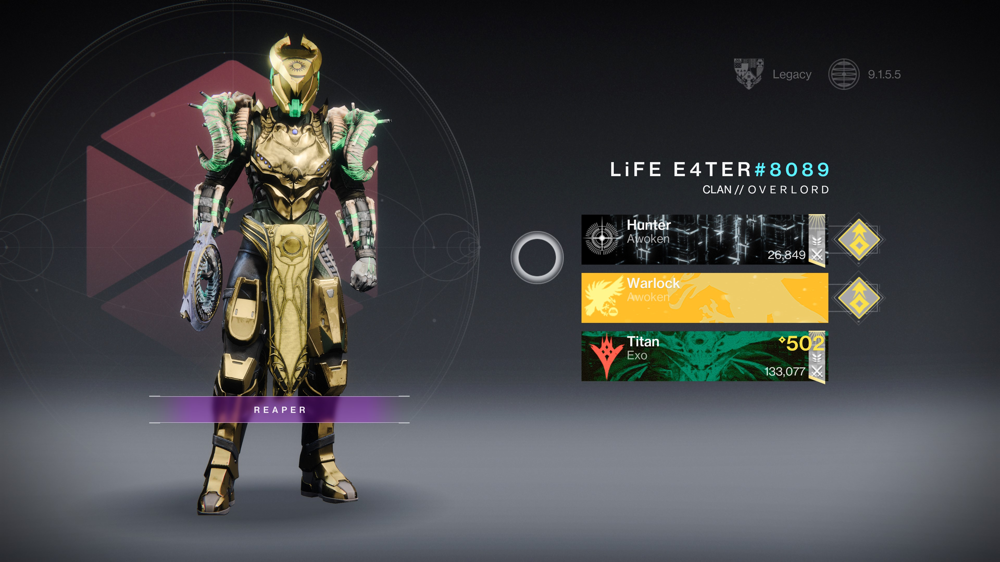
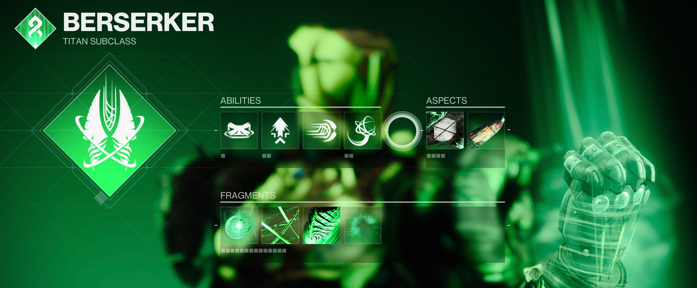
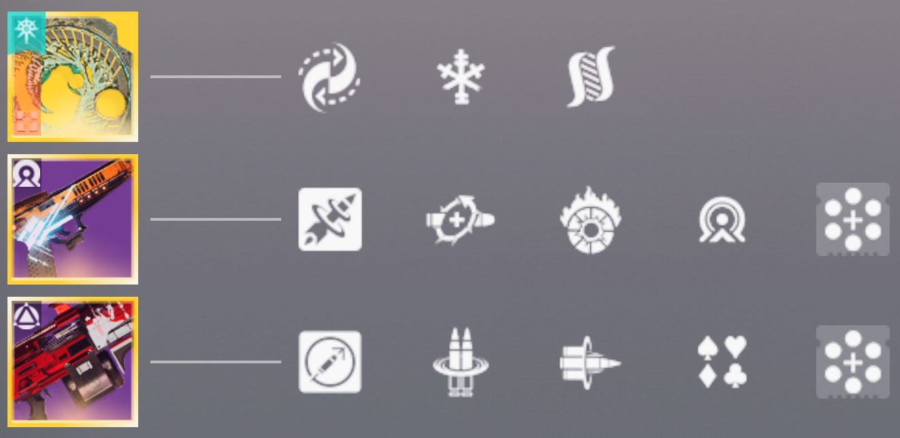
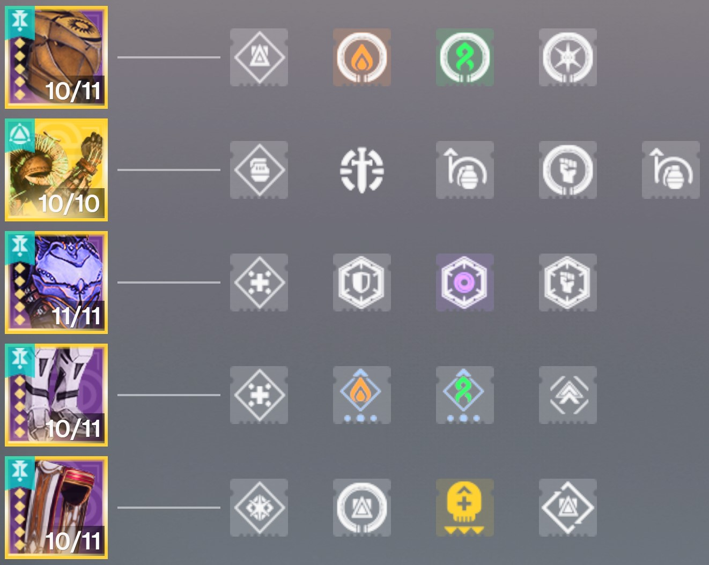

PVE Build: Strand Berserker
This Strand Titan Berserker PvE build is designed to provide constant healing, survivability, and boss melting DPS. This build keeps you alive while maximizing damage through melee synergy and threadling creation.
My Guardian in Full Gear
PvE Gameplay
Strengths of This Build
- Banner of War provides continuous healing on melee kills.
- Thread of Warding grants Woven Mail on Orb pickup for strong damage resistance.
- Healthy Finisher and Heal Clip offer instant recovery when needed.
- Constant ability uptime
- Superior crowd control with Threadlings
Recommended Subclass, Abilities, Aspects & Fragments
Subclass:
- Strand Berserker
Abilities:
- Rally Baricade: Creates a small barrier to peak over while aiming down sights; increases weapon reload speed, stability, and range. Draws hostile fire when you stand behind it.
- Frenzied Blade: Activate charged melee ability to dash forward and sever targets
- Grapple: Weave a grappling hook and quickly pull yourself forward. During and shortly after grappling, your melee attack deals area damage and unravels targets
Aspects:
- Banner of War Defeat a target with a melee attack, finisher, or sword to raise a Banner of War that pulses with energy, healing yourself, nearby allies, and increasing melee and sword damage.
- Drengr's Lash: Activate your Barricade ability to create a ripple that travels forward, suspending and damaging the targets it hits
Fragments:
- Thread of Warding: Picking up an orb of power grants Woven Mail
- Thread of Thansmutation: While you have woven mail, weapon final blows create a Tangle
- Thread of Evolution: Threadlings travel farther and deal additional damage
- Thread of Finality: Finisher final blows create Threadlings
Weapon Loadout
Kinetic Weapon:
- Barrow Dyad: This weapon generates blight as it deals damage. While not firing, blight depletes, and the magazine is gradually refilled. Reload the weapon to convert stored blight into Blighted Seekers
Significant Mods:
- Hatchling: Precision final blows or rapidly defeating targets spawns a Threadling at the target's location
- Taken Ambition: Blight generated increases the longer this weapon remains on target. Blighted Seekers burrow into targets and explode
Energy Weapon:
- Aberrant Action with Heal Clip: reloading after a kill restores health
Heavy Weapon:
- Pro Memoria with Bait & Switch: deal damage with all equipped weapons within a short time to give this weapon a damage boost
Armor Mods
Helmet Mods:
- Solar Siphon: Solar weapon final blows create an Orb of Power
- Harmonic Siphon: Strand weapon final blows create an Orb of Power
- Power Preservation: Your Super final blows create extra Orbs of Power for your allies
Exotic Arms:
- Wishful Ignorance: Gain an additional Frenzied Blade charge. Frenzied Blade and Flechette Storm briefly increase their damage with each strike. Pulses from your Banner of War return melee energy based on the number of allies healed
Arm Mods:
- 2x Impact Induction: causing damage with a powered melee attack reduces grenade cooldown
- Heavy Handed: your powered melee final blows create Orbs of Power
Chest Mods:
- Resistance Mods: change depending on combatant’s damage type
- Concussive Dampener: reduces incoming area-of-effect damage from combatants
Leg Mods:
- Strand Weapon Surge strand weapons gain a small bonus to damage while you have an Armor Charge
- Solar Weapon Surge: solar weapons gain a small bonus to damage while you have an Armor Charge
- Enhanced Athletics increases movement speed and jump height
Mark Mods:
- Reaper: shortly after using your class ability, your next weapon final blow spawns an Orb of Power
- Healthy Finisher: defeating an enemy with your finisher heals you
- Distribution: reduces all ability cooldowns when using your class ability near targets
How This Build Works
- Melee kills build Banner of War, generate Orbs of Power, and maintain Woven Mail
- Use Grapple to evade or to trigger a powerful melee attack against a stronger enemy or a group of enemies
- Finishers provide healing and spawn Threadlings
- Build up Blight with Barrow Dyad, then reload to unleash Blighted Seekers for a powerful burst of high impact damage
- Threadlings clear enemies while you focus on major ads or DPS on the boss
- Drop Rally Barricade before damage phases to generate an Orb of Power and boost weapon stats
- Swap to Pro Memoria for DPS, proc Bait & Switch for a huge damage boost